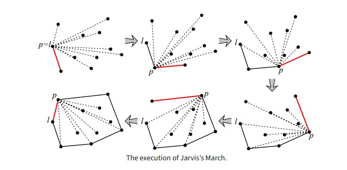
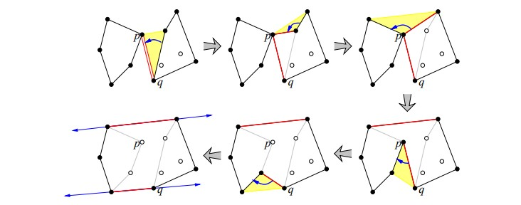

Convex Hull Algorithms
Jarvis's March Algorithm
1. Initial Selection: The algorithm starts by identifying the leftmost point as the starting point, known to be part of the convex hull, due to its x-coordinate being the smallest. This process takes linear time.
2. Iterative Selection: Successive convex hull vertices are found by iteratively selecting the point that appears farthest to the right when viewed from the current point. This process involves pivoting steps and continues until the algorithm returns to the starting point. Each vertex selection is based on a series of counter-clockwise tests, executed in linear time.
3. Time Complexity Analysis: Although the algorithm takes O(n) time for each convex hull vertex selection, its worst-case running time is O(n2). However, this analysis overlooks its efficiency when the convex hull has few vertices. Reframing the time complexity as O(nh), where h is the number of convex hull vertices, illustrates that the algorithm is output-sensitive. In scenarios where h is small (e.g., h=3), the algorithm operates in O(n) time.
Kirkpatrick–Seidel Algorithm
1. Initial Splitting: Similar to other divide-and-conquer methods for convex hulls, the Kirkpatrick–Seidel algorithm begins by splitting the input point set into two roughly equal-sized subsets based on the median of their x-coordinates. This process is completed in linear time.
2. Edge Identification: In contrast to other algorithms, Kirkpatrick–Seidel starts by identifying the convex hull edges intersecting the vertical line defined by the median x-coordinate. Surprisingly, this step takes linear time.
3. Non-contributing Points Discard: After determining the edges intersecting the vertical line, the algorithm discards points on the left and right sides of the splitting line that cannot contribute to the final hull. This pruning step is crucial for efficiency.
4. Recursive Processing: The algorithm then recursively processes the remaining points. It conducts separate recursions for the upper and lower portions of the convex hull. In the upper hull recursion, points vertically below the bridge edge are discarded, while in the lower hull recursion, points above the bridge edge are discarded.
5. Termination: Recursion ends when a sufficiently small subset of points is reached, enabling direct computation of the convex hull using simpler algorithms like Graham's scan or Jarvis march.
6. Time Complexity: The key efficiency of the Kirkpatrick–Seidel algorithm lies in its adept identification of convex hull edges intersecting the median x-coordinate line and subsequent elimination of non-contributing points. This approach yields a time complexity of O(n log h), where n is the number of input points and h is the number of points in the convex hull. As such, the algorithm is output-sensitive, demonstrating efficient performance for large-scale problems with relatively small convex hull sizes compared to the total input points.
